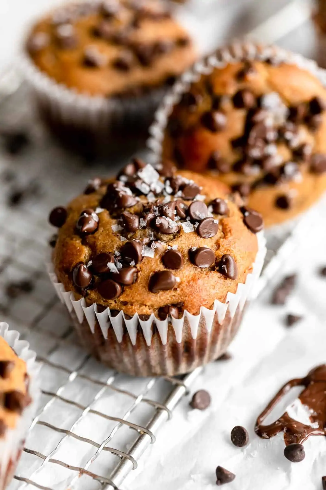

Banana Protein Muffins

Description
These chocolate chip banana protein muffins are the ultimate meal prep snack. They’re healthy, sweetened with just honey, made with almond flour and ready in under 30 minutes.
They are also gluten free and absolutely delicious.
Ingredients
Wet
1 cup banana puree
2 eggs
¼ cup honey
1 teaspoon vanilla extract
Dry
½ cup blanched almond flour
½ cup oat flour
½ cup vanilla protein powder see notes
2 teaspoons baking powder
½ teaspoon cinnamon
¼ teaspoon salt
½ cup chocolate chips or chopped walnuts (optional)
Instructions
- Preheat the oven to 350 degrees fahrenheit.
- Line a muffin tin with 10 liners and set aside. It helps to *also* spray the liners with oil as the protein powder can cause the batter to stick after baking.
- In a large mixing bowl, whisk together all wet ingredients.
- Whisk in the dry ingredients, aside from the chocolate or nuts if using.
- Fold in the nuts or chocolate chips.
- Scoop into the prepared tray, filling each liner about 3/4 of the way up.
- Bake for 18-24 minutes or until a toothpick comes out clean.
- Remove from the oven and let cool completely before serving.
Notes
I used vanilla pea protein, which I recommend here. You can use whey or another kind, but please stick to vanilla for the best flavor. Make sure it has stevia or another kind of sweetener, or the muffins will be kind of bland.